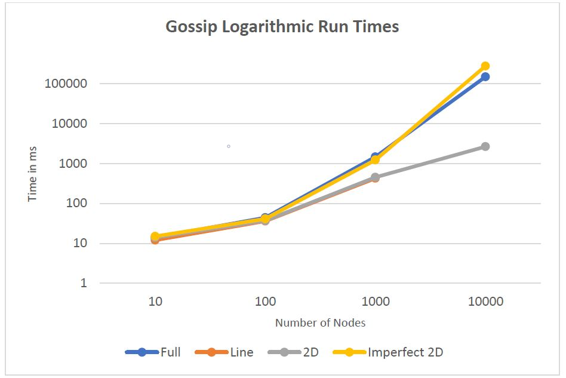

Algorithm Implementation
1. The main program initiates child and parent actors. During the child actor initialization, a neighbour array is initialized for each child actor depending on the actor number and the topology.
2. Once all the child actors are initialized, the parent actor randomly selects a child actor, say ‘x’ and sends the rumour.
3. Actor ‘x’ now selects a random neighbour from its neighbour array, say actor ‘y’ and sends the rumour.
4. Upon receiving the rumour, actor ‘y’ again selects a random neighbour from its neighbour array and forwards the rumour. Meanwhile, actor ‘x’ again selects a random neighbour and forwards the rumour.
5. This process continues at each actor which receives the rumour, until the actor has received the rumour 10 times. After hearing the rumour 10 times, the actor stops forwarding the rumour and the actor number is added to the terminated actor list.
6. Program terminates when the summation of converged nodes and isolated nodes equal number of nodes in the system
Push-sum :
1. The main program initiates child and parent actors. During the child actor initialization, a neighbour array is initialized for each child actor depending on the actor number and the topology.
2. Every child actor contains a value pair (s, w) where s is the actor number and w=1 initially.
3. Once all the child actors are initialized, the parent actor randomly selects a child actor, say actor ‘x’ and sends an initiate message.
4. Upon receiving the initiate message, actor ‘x’ selects a random neighbour from its neighbour array, say actor ‘y’ and sends half of its (s, w) to the actor i.e. (s/2, w/2)
5. When actor ‘y’ receives the message from actor ‘x’, it adds the values of (s,w) received to its own (s,w) values. Next, it selects a random neighbour from its neighbour list and sends half of the newly computed (s,w) while keeping the other half.
6. This cycle continues at each node until the node is terminated.
7. At every instance when the actor receives a message, it calculates a ratio s/w. If this ratio does not change more than 10^-10 in three consecutive rounds, the actor terminates itself along with updating its status in the terminated actor list.
8. Program terminates when the summation of converged nodes and isolated nodes equal number of nodes in the system
Results
